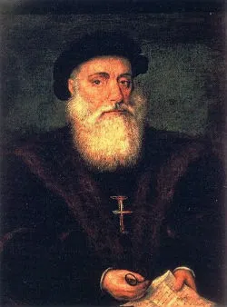

Introdução
O Quinhentismo refere-se ao período da literatura brasileira do século XVI, caracterizado pelos relatos de viagem e a colonização.
O Quinhentismo refere-se ao período da literatura brasileira do século XVI, que coincide com a chegada dos colonizadores portugueses ao Brasil. Este movimento é marcado pela produção de cartas, relatos de viagem e crônicas, que documentavam as primeiras impressões sobre a terra e seus habitantes. O estilo é predominantemente descritivo, focando nas belezas naturais e na riqueza cultural dos povos indígenas. Autores como Pero Vaz de Caminha e José de Anchieta foram fundamentais para a formação da identidade literária brasileira, trazendo uma perspectiva europeia sobre o Novo Mundo e suas potencialidades.
Principais Autores
- Pero Vaz de Caminha 
- José de Anchieta
Obras Significativas
As cartas e crônicas desse período são fundamentais para a compreensão da colonização.
- Obras do quinhentismo
- As principais obras do quinhentismo são:
- A carta de Pero Vaz de Caminha.
- A carta de mestre João Faras.
- Relação do piloto anônimo.
- Cartas de Pe. Manuel da Nóbrega.
- Arte de gramática da língua mais usada na costa do Brasil (1595), de Pe. José de Anchieta.
- Duas viagens ao Brasil (1557), de Hans Staden.
- Auto da festa de São Lourenço (1583), texto teatral de Pe. José de Anchieta.